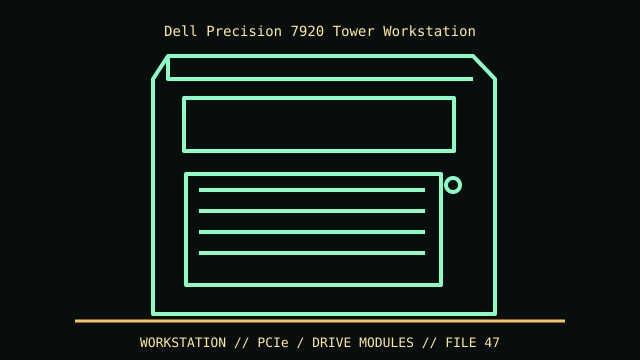

[ IDENTIFIED ENCLOSURE // PRECISION 7920 TOWER DUAL-SOCKET WORKSTATION ]
Dell Precision 7920 Tower Workstation
446 × 218 × 566 mm (H × W × D); base system around 20.4 kg. GPU maximum and airflow depend on installed card cage/riser.

VARIANT / ARCHIVAL CAVEAT: 7920 Tower differs from 7920 Rack and 7820. Check service tag, GPU support matrix, riser and storage FlexBay; configurations vary by regional SKU.
Mechanical specifications and fit
| Catalog identity | Precision 7920 Tower dual-socket workstation |
|---|---|
| Dimensions and clearances | 446 × 218 × 566 mm (H × W × D); base system around 20.4 kg. GPU maximum and airflow depend on installed card cage/riser. |
| Drive bays / mounts | Two external 5.25-inch bays, slim optical option and modular FlexBays; internal combinations support up to 4 × 3.5/2.5-inch or multi-2.5-inch with specified backplanes. |
| Board, system and compatibility | Dell dual-socket board, high-wattage PSU and PCIe risers; multiple double-width cards require correct CPU, riser and power option. |
| Revision / identification | 7920 Tower differs from 7920 Rack and 7820. Check service tag, GPU support matrix, riser and storage FlexBay; configurations vary by regional SKU. |
Preservation and installation notes
7920 Tower differs from 7920 Rack and 7820. Check service tag, GPU support matrix, riser and storage FlexBay; configurations vary by regional SKU.
Dell dual-socket board, high-wattage PSU and PCIe risers; multiple double-width cards require correct CPU, riser and power option.
- Capture the complete model/SKU, serial/date label, board assembly and bay/backplane/riser identifiers before disassembly; keep matched screws, trays, carriers, feet and cables with the case.
- Check the cited manual's specific build option before transferring hardware. Published maximum GPU, drive, fan or radiator capacity may not be simultaneous when a removable cage or alternative riser occupies that volume.
- For rack and vintage systems, preserve the exact rails, shields, doors, brackets and model-specific safety instructions; do not infer compatibility from a familiar brand or physical connector shape.
Manufacturer manuals and archival sources
- Dell Precision 7920 Tower specification sheetPrimary manufacturer or model-specific technical/manual reference used for the identification and mechanical data above.
- Dell Precision 7920 Tower Owner’s ManualSecond product manual, manufacturer resource or established technical archive; choose the exact regional SKU and revision.
When exact dimensions depend on configuration, the text says so; verify the measured specimen before making a fit or restoration decision.